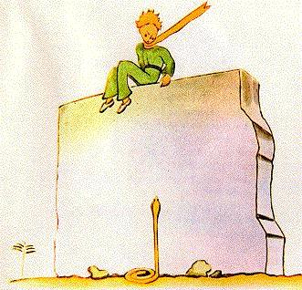
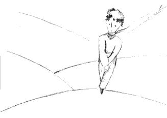
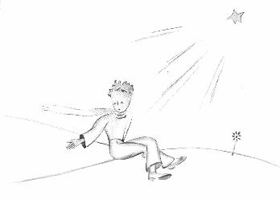

In aice leis an tobar bhí fothrach de sheanbhalla cloiche. Nuaira
d'fhill mé ó mo chuid oibre tráthnóna an lá arna mhárach, cad é
ad fheicfinn anonn uaim ach mophrionsa beaginashuíin airde
air, agus a dhá chois ar crochadh. Agus chuala mé é ag caint:
-Ní cuimhin leaté mar sin? a bhísé ag rá. Ní anseo go direach
a bhí sé!
Caithfidh gur thug glór eile freagra air, mar dúirt sé ar ais:
- Cinnte dearfa, is é an lá ceart é, ach ní hí seo an áit...
Lean mé orm ag siúl i dtreo an bhalla. Ní raibh duine ná
diúlach le feiceáil ná le cluinstint go fóill. Dá ainneoin sin,
d'fhreagair an prionsa beag arís:
-.. Cinnte. Tífidh tú an áit a dtosaíonn mo lorg sa ghaineamh.
Níl le déanamh agat ach fanacht liom ansin. Beidh mé ann
anocht.
Bhí mé faoi fhad scór slat den bhalla agus gan rud ar bith le
feiceáil go fóill.
Dúirt an prionsa beag arís, tar éis tamaill ina thost:
- An bhfuil nimh mhaith agate Tá tú cinnte nach mbeidh mé
ag éileamh i bhfad?

Baineadh Stad asam, mar a thiocfadh tocht ar mo chroí ach ní
raibh tuigbheáil ar bith le fáil agam
Anois imigh leat, ar seasean...ba mhaith liom tuirlingt arís
Leis sin bhreathnaigh mise síos ag bun an bhalla, agus baineadh
geit asam! Cad é a bhí ansin, ina colgsheasamh os comhair ar.
phrionsa bhig, ach ceann de na nathracha buí a d'fhágfadh maol
marbh thú taobh istigh de leathbhomaite. Chuir mé chun reatha
agus mé ag póirseáil i mo phóca ar lorg mo ghuinnáin, ach leis an
tormán a rinne mé, lig an nathair í féin síos go héasca sa
ghaineamh, mar a bheadh scairdeán uisce ag titim siar, agus gan
mórán i deifre uirthi, chaolaigh Sí léi idir na clocha agus
gliúrascnach bheag léi
Shroich mé chomh fada leis an bhalla díreach in am le mo
phrionsa beag bocht a cheapadh i m'ucht, agus é chomh bán san
aghaidh leis an sneachta
-Cad é atá ar siúl anseo? An ag caint le nathracha nimhe atá tú
anois?
Bhí mé i ndiaidh a éadan a fhliuchadh agus deoch
a thabhairt dó. Agus anois ní raibh sé d'uchtach agam a dhath eile
a fhiafraí de. D'amharc sé go stuama aníos orm agus shnaidhm sé
é féin ionam. Mhothaigh mé a chroí ag preabadhach mar a bheadh
croí éinín a bheadh ag fáil bháis, tar éis a lámhach le gunna.
Ar seisean líom:
- Is maith liom go bhfuair tú an rud a bhí in easamh ar an
eitleán. Beidh tú in ann filleadh abhaile...
- Cad é mar atá a fhios sin agat?
Bhí mé díreach ag teacht lena chur in iúl dó gur éirigh mo
chuid oibre liom d'ainneoin na n-ainneoin!
Níor thug sé freagra ar bith ar mo cheist, ach ar seiseann arís:
_ Mise fosta, tá mé ag filleadh abhaile...
Ansin, agus iarracht de lionn dubh air...
- Tá sé i bhfad níos faide i gcéin....i bhfad níos deacra...
Mhothaigh mé go soiléir go raibh rud éigin as an ghnách ag
tarlú. Bhí sé fáiscthe i m'ucht agam mar a bheadh páiste beag ann,
agus san am céanna, chonacthas dom go raibh sé ag dul síos go
tóin poill i nduibheagán gan mé bheith in ann a choinneáil ar
bhealach ar bith...
Bhí amharc tromchúiseach ina shúile, mar a bheadh siad sáite
i rud éigin an-fhada i gcéin.
- Tá do chaora agam. Agus tá an cófra agam fá choinne na
caorach. Agus tá an mhantóg agam...
Rinne sé miongháire agus lionn dubh go fóill air.
D'fhan mé tamall fada. Mhothaigh mé an teas ag teacht ar ais
ann:
Cinnte go raibh eagla air! Ach rinne sé gáire beag ciúin.
- Is mó i bhfad an eagla a bheas orm anocht...
Mhothaigh mé an leac oighir ar mo chroí arís mar bhraith mé
nach raibh leigheas air mar scéal. Agus thuig mé nach bhféadfainn
a sheasamh dá mba rud é nach gcluinfinn an gáire sin aige níos
mó. B'ionann agam é agus tobar uisce i lár an ghaineamhlaigh.
- A ghasúirín, a thaisce, ba mhaith liom do gháire a chluinstin
arís...
Ach dúirt sé liom:
- Tá sé bliain díreach agus an oíche anocht. Beidh an réalta
s'agamsa díreach os cionn na háite ar thit mé anuraidh...
-Aghasúirín liom,an ea nach bhfuil ann ach drochbhrionglóid
an scéal seo uilig faoin nathair nimhe agus faoin ionad coinne
agus faoin réalta...
Ach níor thug sé freagra ar bith ar mo cheist. Ar seisean:
- Is é atá tábhachtach, an rud nach féidir a fheiceáil...
- Cinnte...
-Is ionann an cás leis an bhláithín. Má tá grá agat do bhláth atá
thuas ansin ar réalta, is deas an rud é,le teacht na hoiche, bheith
ag breathnú na spéire. Tá gach aon réalta ina bláth.
- Cinnte...
-Is ionann an cás leis an uisce. Nuair a thug tú an deoch dom,
bhí sé mar a bheadh ceol ann, de thairbhe na hulóige agus an
téid....an ea nach cuimhin leau....is é a bhí maith.
- Cinnte dearfa...
- Beidh tú ag amharc ar na réaltaí san oíche. Tá an ceann
s'agamsa róbheag le taispeáint duit cá bhfuil sé. Is amhlaidh is
fearr. An réaltas'agamsa beidh sí ansin i measc na réaltaí. Mar sin,
taitneoidh sé leat bheith ag amharc ar na réaltaí go léir....Beidh
siad go léir ina gcairde agat. Agus, ina theannta sin, tá mé ag dul
bronntanas a thabhairt duit...
Rinne sé gáire arís.
- Och, a ghasúirín, a thaisce, is maith liom an gáire sin agat!
- Sin é go díreach mo bhronntanas...Beidh sé mar a bhí an t-uisce.....
- Cad é atá tú á rá?
- Tá réaltaí difriúla ag daoine seachas a chéile. Ag lucht taisul,
is treoraithe iad. Dar le daoine eile, níl iontu ach soilse beaga. Dar
le lucht léinn, fadhbanna atá iontu. Shíl an fear gnó úd guróra
bhí iontu. Ach na réaltaí sin go léir, tá siad balbh. Beidh réaltaí
agatsa nach bhfuil a macasamhail ag duine ar bith....
- Cad é atá tú á rá?
-Nuair a amharcann tusaaran spéirsan oíche beidh mise i mo
chónaí i gceann acu, beidh mé ag gáire chugati gceann acu. Mar
sin de, beidh na réaltaí go léir ag gáire, dar leat. Réaltaí a bheas
agatsa atá in ann gáire a dhéanamh!
Agus rinne seisean gáire arís.
- Nuair a imíonn an cian díot (imíonn an cian igcónaí), beidh
tú sásta gur chuir tú aithne orm. Beidh tú i do chara agam i gcónaí.
Beidh fonn ort gáire a dhéanamh in éineacht liom. Agus osclóidh
tú an fhuinneog uaireanta, mar sin díreach, ar mhaithe le
82
pléisiúr....Agus beidh iontas ar do chairde n a fheiceáil ag
amhrac suas sa spéir agus ag agus ag gáire. Agus déarfaidh tú leo ansin:
“Sea, cuireann na réaltaí ag gáire mé i gcónaí!” Agus sílfidh siad
go bhfuil tú as do chiall. Beidh mé i ndiaidh bob cearta bhualadh
ort...
Agus rinne sé gáire aris.
Beidh sé mar a bheinn tar éis na mollta de chloiginí beaga
thabhairt duit a bhfuil gáire acu, in ionad réaltaí...
Rinne sé gáire arís. Ansin thit a thost air as an nua
- An oíche anocht....tá a fhios agat....ná bí ann.
- Níl mé ag dul tú a fhágáil.
Beidh an chuma orm go bhfuil mé tinn...beidh an chuma orm
mórán go bhfuil an bás orm. Sin an dóigh a mbeidh sé. Ná tar a
dh'amharc air, ní fiú duit...
Níl mé ú a fhágáil.
Ach bhí buaireamh air.
- Tá mé á rásin leat...mar gheall ar an nathair nimhe. Seachain
nach ngearrann sé thú...Tá dochar iontu, mar nathracha.
D'fhéadfadh siad tú a ghearrad ar mhaithe le sult...
- Níl mé ag dul tú a tú a fhágáil.
Ach chuir rud éigin a aigne chun suaimhnis:
- Is fíor nach bhfuil an nimh don dara gearradh.
Ní fhaca mé é ag cur chun bóthair an oíche sin. D'éalaigh sé
gan tormán ar bith. Nuair a d'éirigh liom teacht suas leis, bhí sé
ag siúl de chéim ghasta agus fuadar faoi. Ní dúirt sé liom ach an
méid seo:
-Á, tá, tú ansin...
Agus rug sé greim láimhe orm. Ach tháinig imní air arís.
-Níor cheart duit teacht. Beidh brón ort. Beidh an chuma orm
go bhfuil mé marbh agus ní hamhlaidh a bheas...
Bhí mise i mo thost.
- An dtuigeann tú mé. Tá sé rófhada i gcéin. Ní thig liom an

corp seo a thabhairt liom. Tá sé róthrom
Bhí mise i mo thost.
Ach ní bheidh ann ach mar a bheadh seanchraiceann a
caitheadh i leathaobh. Ní árbar bróin iad na seanchraicne caite...
Bhí mise i mo thost.
Tháinig iarracht de bheaguchtach air. Ach thug sé faoi arís:
- Beidh sé go deas, tá a fhios agat. Beidh mise ag amharc ar na
réaltaí chomh maith. Beidh na realtaí go léir ag
doirteadh amach deoch uisce dom.
Bhí mise i mo thost.
Is mór an chuideachta a bheas ann! Beidh cúig chéad milliún
de thoibreacha agamsa...
Agus thit a thost airsean fosta, mar bhí séag caoineadh...

-Sin í an áit. Lig dom coiscéim a shiúi mé féin. Agus shuigh sé
síos mar go raibh eagla air.
Ar seisean arís:
-An bhfuilafhios agat...an bláithín sin agam tá sí chomh saonta
sin. Níl aici ach ceithre dhealg bheaga gan rath lena cosaintaran
saol mór....
Shuigh mise síos fosta mar ní raibh mé in ann fanacht i mo
sheasamh níos faide. Ar seisean:
- Sin é....Sin an méid....
Stad sé bomaite, agus ansin d'éirigh sé ina sheasamh. Thug sé
céim chun tosaigh. Ní raibh mise in ann corraí. Níor tharla ach
mar a bheadh splanc buí in aice lena mhurnán. D'fhan sé seal
faiteadh súl gan bogadh. Níor chuir sé fuaim as. Thit sé go ciúin
caoin mar a thiteann crann. Ní dhearna sé tormán ar bith fiú
amháin, mar gheall ar an ghaineamh.